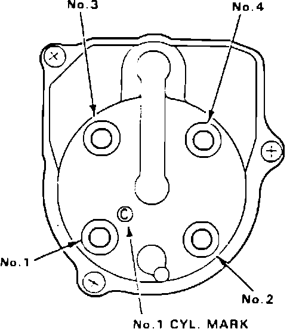

Campaign - Engine Won't Start (Igniter Failure)
BULLETIN NO.93-003
YEAR
1988 - 89
MODEL
INTEGRA
VIN APPLICATION
ALL
February 9, 1993
Product Update:
Integra Igniter (Supersedes 93-003, dated January 12, 1993)
BACKGROUND
The igniter may fail. If this happens, the engine will not start. This product update is being conducted to help eliminate any possibility of igniter failure.
CUSTOMER NOTIFICATION
Owners of affected vehicles will be contacted by mail and asked to take the car to a dealership for repair. The text of the customer letter is on the back of this service bulletin.
CORRECTIVE ACTION
Replace the igniter with the updated part listed under PARTS INFORMATION.
1. Unplug the distributor 2-P and 6-P connectors.
2. Disconnect the spark plug wires trom the distributor cap.
3. Remove the three distributor hold-down bolts. Remove the distributor from the car.
4. Remove the distributor cap, leak cover, and rotor.
5. Disconnect four wires from the igniter terminals.
6. Remove the two igniter assembly mounting screw. Discard the screws.
7. Remove the igniter assembly from the distributor. Remove the two screws mounting the igniter to the heat sink. Install the new igniter on the heat sink with the original screws.
8. Connect the BLU wire to the terminal on the side of the igniter. Install the igniter assembly in the distributor with the new screws that came in the kit.
9. Reconnect the remaining wires to the igniter.
NOTE:
If any connector does not fit tightly on an igniter terminal, squeeze the connector end with a pair of pliers to reduce the clearance.
10. Reinstall the rotor, leak cover, and distributor cap.
11. Install the distributor in the car with a new O-ring. Do not fully tighten the hold-down bolts.

12. Reconnect the 2-P and 6-P connectors and the spark plug wires.
13. Adjust the ignition timing according to the procedure in the service manual.
14. Center-punch a completion mark above the first digit of the engine compartment VIN.
PARTS INFORMATION
Igniter kit P/N 06302-PT2-000
O-ring P/N 30110-PAL-732
WARRANTY CLAIM INFORMATION
Operation number:
117125
Flat rate time:
0.5 hour
Failed P/N:
30120-PM5-A01 [NEW]
Defect code:
616
Contention code:
J64
Example of Customer Letter
January 1993
Product Update: Integra Ignition System
Dear Integra Owner:
Honda Motor Co., Ltd. has determined that a part in your car's ignition system does not meet Acura's standards for durability. If this part, called the igniter, should fail, your car's engine will not start.
An improved igniter is now available. Please call your Acura dealer and schedule an appointment to have it installed. This update will be done free of charge. Please plan to leave your car at the dealer for at least half a day to allow him flexibility in scheduling.
You should not ignore this notice if you had the igniter replaced previously. Please make an appointment with the dealer to have an updated unit installed. You are also eligible for reimbursement if you paid for that igniter replacement. Reimbursement is subject to the eligibility requirements given on the enclosed "Request for Reimbursement" form included for your convenience.
We apologize for any inconvenience this product update may cause you; however, our main concern is the continued trouble-free operation of your Integra. If you have any questions, please call or write:
Acura Customer Relations Department
1919 Torrance Boulevard
Torrance, CA 90501-2746
(800) 382-2238